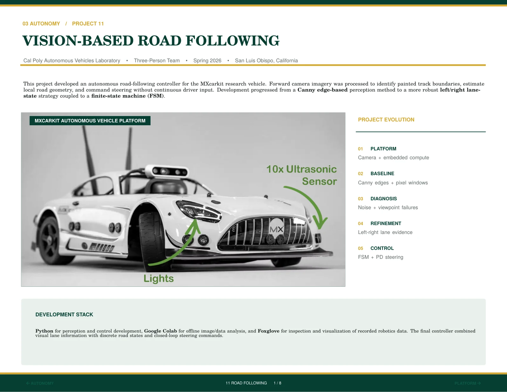
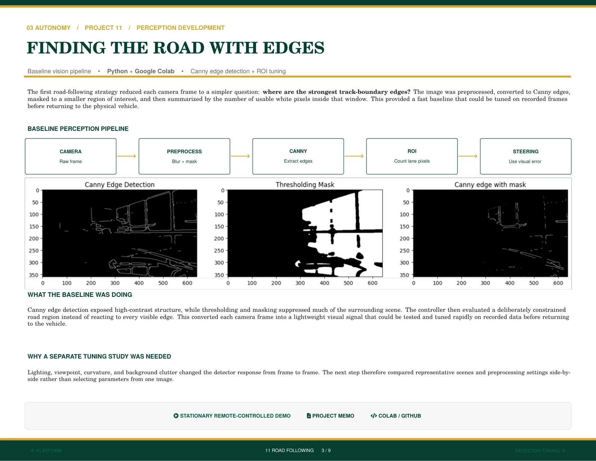
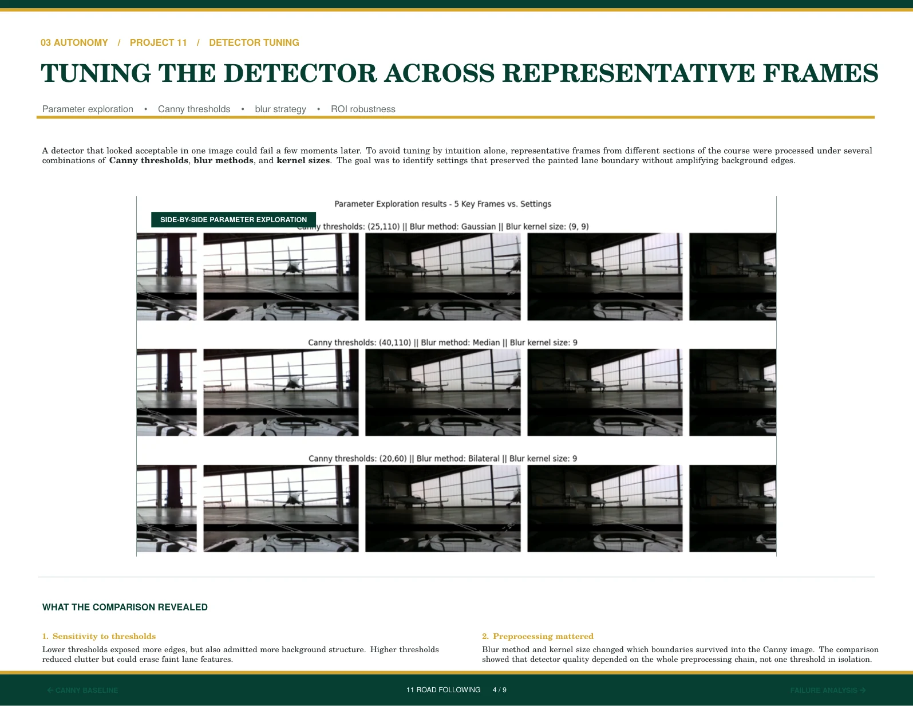
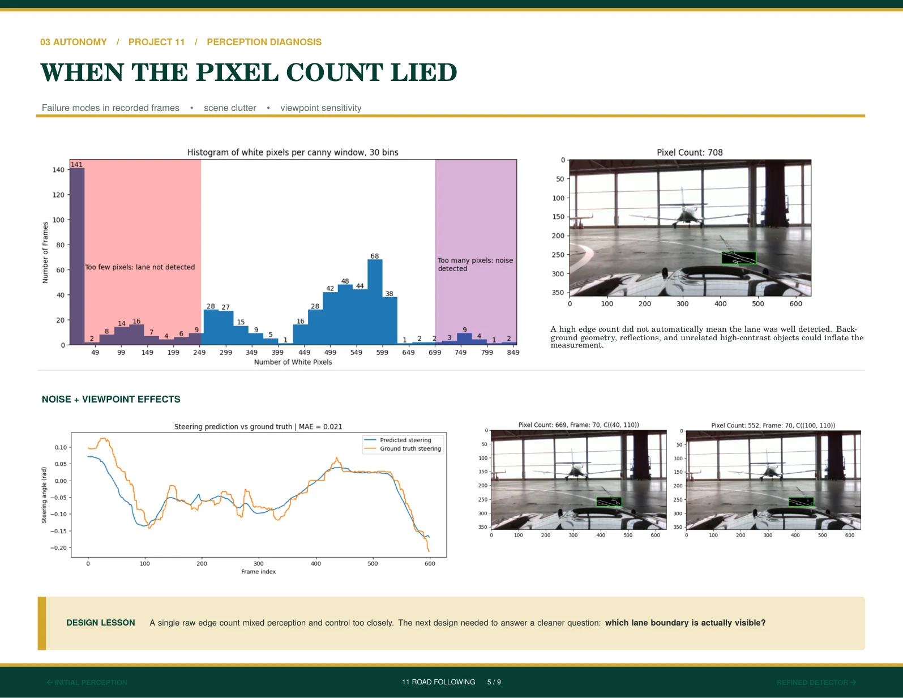
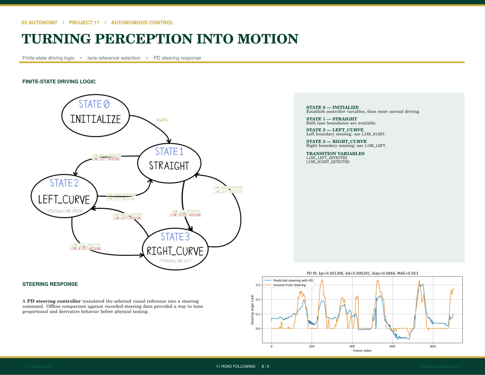
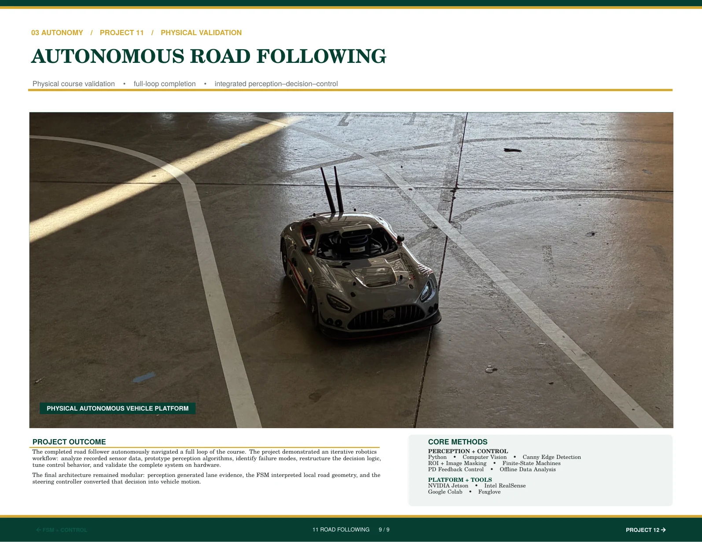

PDF PAGE 31 / 64 PDF PAGE 32 / 64
PDF PAGE 32 / 64

PDF PAGE 33 / 64
PDF PAGE 34 / 64
PDF PAGE 35 / 64 PDF PAGE 36 / 64
PDF PAGE 36 / 64
 PDF PAGE 37 / 64
PDF PAGE 37 / 64

PDF PAGE 38 / 64
PDF PAGE 39 / 64